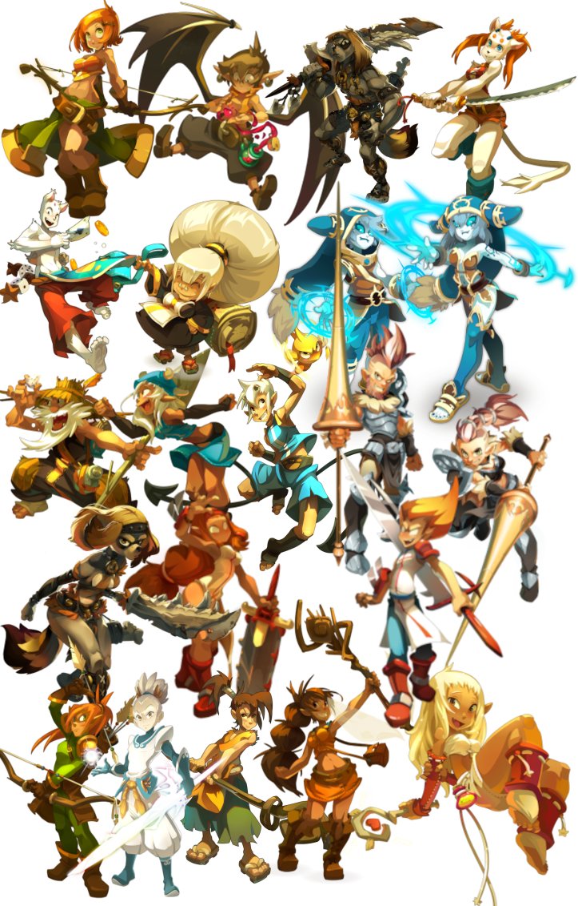
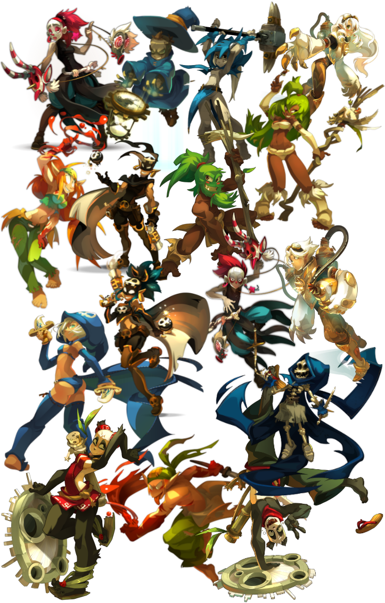

 
Identifie tes classes de prédilection rapidement!
1. Tu recherches un gameplay simple ou plus riche et difficile à prendre en main?
Je préfère sans prise de tête.
Je veux maîtriser une classe profonde.
2. Comment tu te défends contre tes adversaires?
Je reste à distance de sécurité sans salir mes mains.
Je fonce dans la bagarre et je résiste les coups.
3. Damage dealer ou support?
Je préfère plus de flexibilité ou de soutien.
Je suis la star qui mettra les gros chiffres.
4. Tu priorises le jeu autonome ou le jeu en groupe?
Je veux être indépendant au maximum et surtout jouer en solo.
Je souhaite d'être un précieux atout à mon équipe.
5. T'as plutôt un esprit farmeur (earlygame) ou tu aimes débloquer ton plein potentiel en lategame?
Je ne suis pas pressé, j'aimerais devenir surpuissant lorsque le combat perdure.
Je veux être puissant et impactant dès le tout début du combat.
6. Comment tu imagines idéalement tes combats niveau dynamisme?
Statique: Pas de prise de tête côté placement.
Dynamique: J'adore être mobile ou faire du placement pour contrôler le terrain.
7. Plutôt généraliste ou spécialiste?
L'efficacité, je veux briller dans mon domaine.
La polyvalence, je veux pouvoir tout faire.
Envoyer